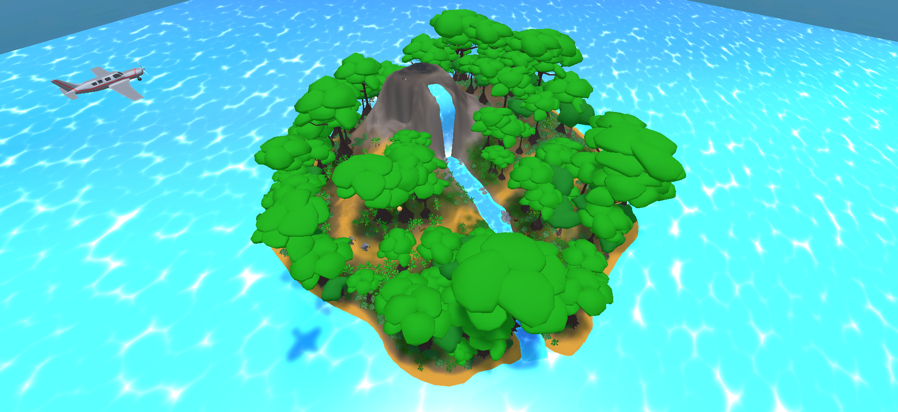
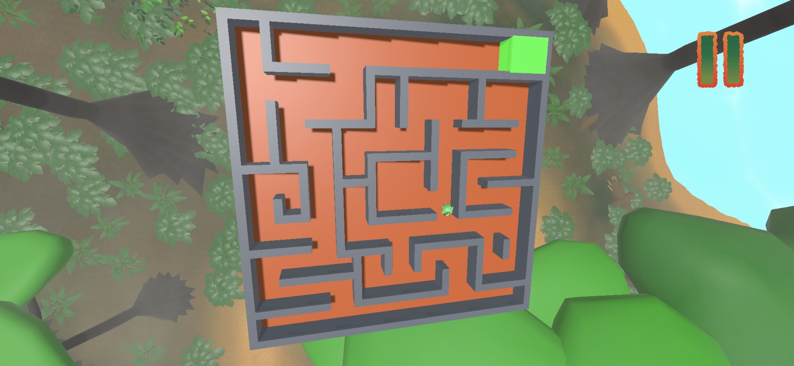
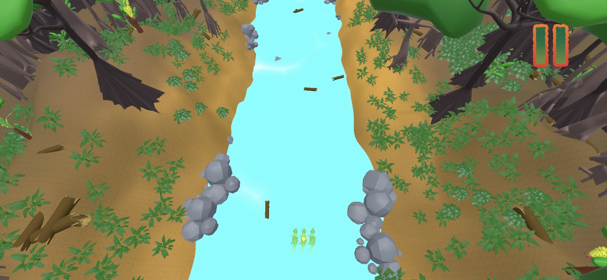
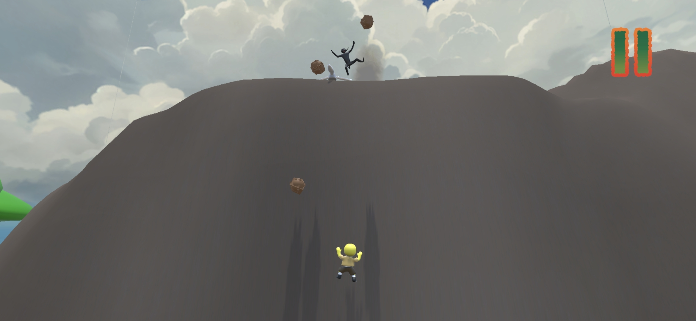
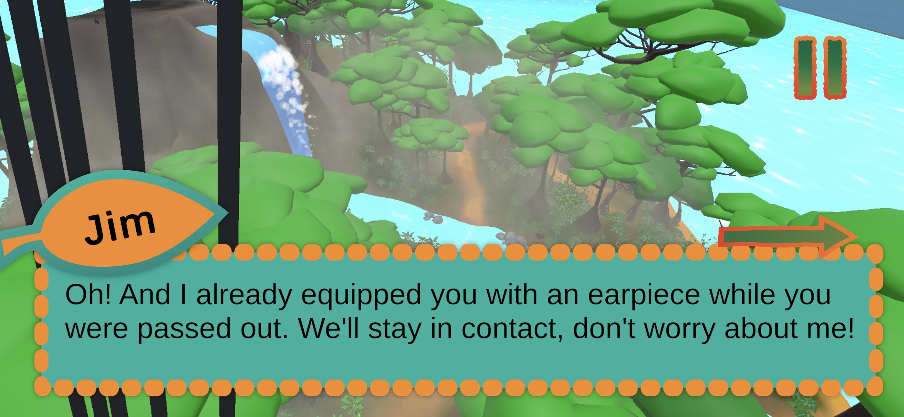
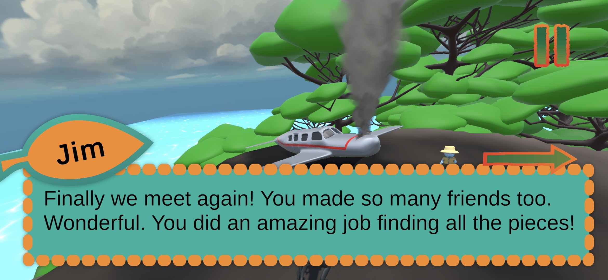
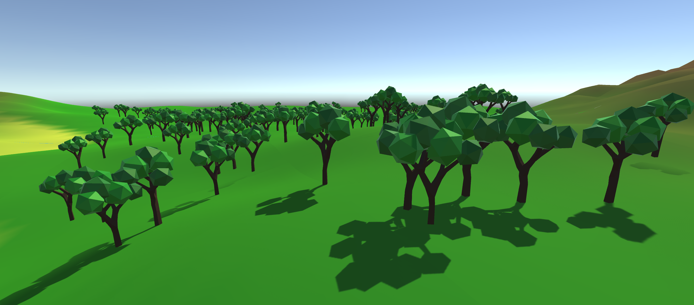

Programming Portfolio
of Silvijn van Komen
About me
My name is Silvijn and I am a game programmer with an interest in tools programming I am currently studying Creative Media & Game Technologies at Hanze University in Groningen, Netherlands.
Projects
Borneo - School Project

This is a 3D adventure game made for my study. The game is made for the fictional Wildlands case. It is supposed to advertise the zoo to the players. The game tells the story of Jim and the player who crashland in the borneo jungle. The animals are presented as friendly and they help you collect parts of your crashlanded plane to get back. Main gameplay is centered around minigames.
My role
I was the main programmer in charge of coding systems for the game. Along other things, I made a Dialogue/Cutscene system and all the Minigames.Minigames
All of our Minigames contained Gyroscopic controls, meaning the games are controlled by physical movements of the phone. Because we were going to make multiple minigames (ended up being 3), I made a script called GyroControl, that could be used in Minigames by writing one line of code. This made implementing controls for new Minigames way easier because I was essentially reusing code.


Dialogue
To tell the story of the game, we needed a system that displays dialogue and animates cutscenes. It needed to have support for localization, because the game had 3 languages. I made a script that does both of these. It reads dialogue directly from localization tables, so its easy to import dialogue lines. The cutscene logic can be configured entirely from the Inspector in the Unity Editor and supports camera transitions and animation triggers for every dialogue line. It also has a UnityEvent as a bonus so you can hook up any custom logic you want.

RSurvival - Passion Project

Itch.io page can be found here
Source code can be found here
My Role
I am the only developer of the project. As of writing a friend who was in the Borneo team has showed interest in the project so you might see some commits from him on the github :)Procedural Terrain Generation
Run Run Robot - School Project
This website
Making this website has been my first time using HTML/CSS, and i've really enjoyed it so far.